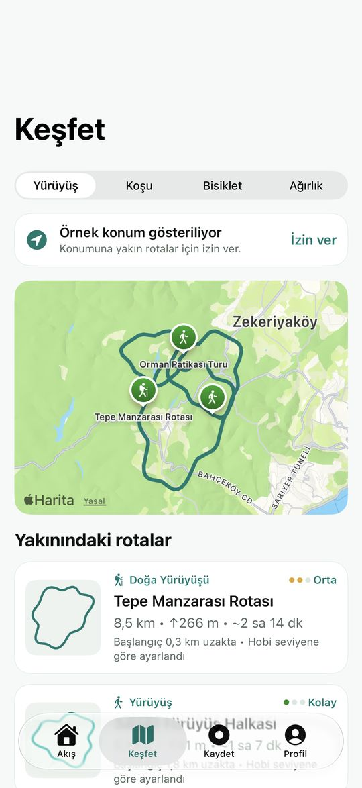
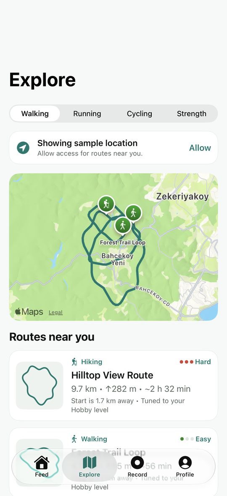

Konumuna özel rotalarRoutes where you are
Dağ (MTB)'ye dokun, Apple Haritalar yol ağıyla bulunduğun yerden başlayıp dönen 5 rota hazırlansın.Tap Mountain (MTB) and get 5 loops on the Apple Maps road network that start and end where you are.